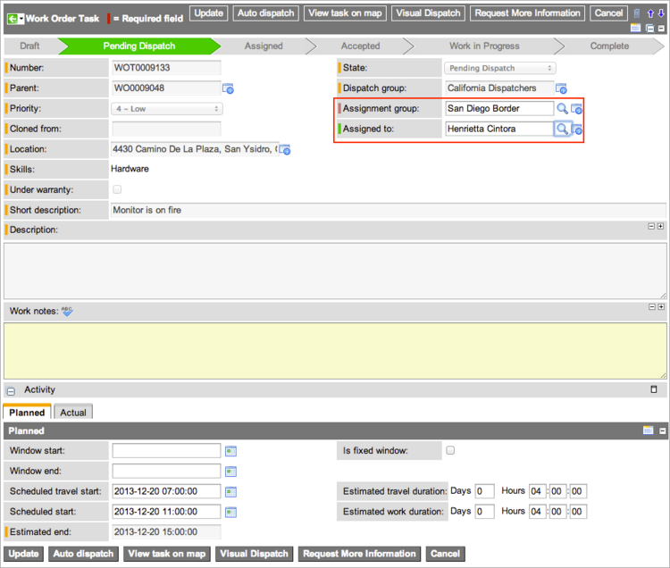
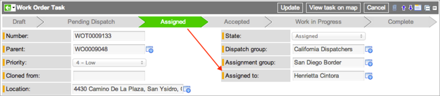
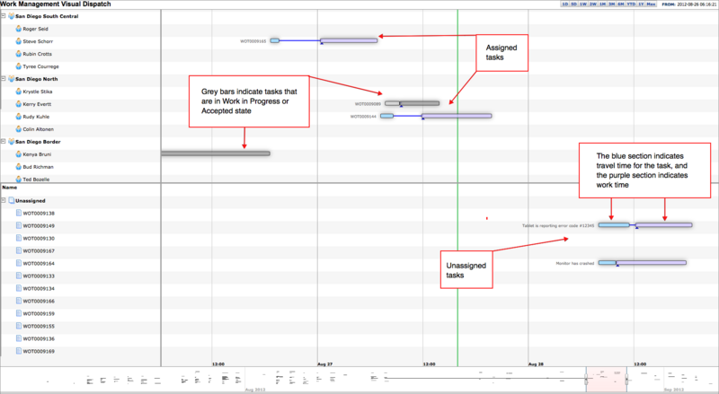

Dispatching Work Order Tasks - Versions Prior to Fuji
Contents
1 Overview
After all work order tasks are qualified, the parent work order state automatically changes to Qualified. If you have already sourced parts and created transfer order lines, you are ready to begin dispatching work order tasks to agents, either from the dispatch queue or from the task map. Users with the wm_dispatcher, wm_initiator_qualifier_dispatcher, or wm_admin role can use these procedures
You can dispatch work order tasks to qualified work agents from these locations:
- Dispatch queue: Dispatch tasks to agents manually from task records.
- Task map: Dispatch individual tasks using a Google map with geolocation.
- Visual Dispatch: Dispatch tasks using a graphical timeline.
| |
Note: References to Work Management indicate that the information on this page is valid for ServiceNow versions prior to Fuji. In the Fuji release, Work Management was renamed Field Service Management. |
2 Requesting Additional Task Information
If there is not enough information to dispatch a task, the dispatcher can request more details from the qualifier. This action returns a work order to the Awaiting Qualification state.
- Navigate to the appropriate location for your version:
- Eureka release or later: Work Management > Dispatching > Dispatch Queue
- Dublin release or earlier: Work Management > Work Order > Dispatch Queue
- Open a work order task in Pending Dispatch state.
- In the Work Notes field, enter a reason for returning the work order.
- Click Request more information.
- The task state changes to Draft and the work order state changes to Awaiting Qualification. If work management is configured for automatic qualification, the work order state remains at Qualified.
3 Dispatching Tasks from the Queue
- Navigate to the appropriate location for your version:
- Eureka release or later: Work Management > Dispatching > My Dispatch Queue
- Dublin release or earlier: Work Management > Work Order > My Dispatch Queue
- Open a work order task.
- Select an Assignment group.
- Select an individual agent in the Assigned to field.
- Only agents in the assignment group who have the specified skills appear in the lookup list. If no agents in the assignment group have the required skills, everyone in the assignment group appears in the Assigned to field, and a message states that no group members have the skills.
- 
- Click Update.
- The work order task is now dispatched in the Assigned state.
- 
3.1 Auto-Dispatching Tasks
To automatically dispatch a task from a task record, click Auto-Dispatch. The system attempts to match the task with a nearby agent who has the necessary skills and a schedule that can accommodate the task. If the system cannot find an appropriate agent, it displays a failure message and leaves the task in the Pending Dispatch state. For more information, see Auto-Dispatching from Pending Dispatch.
4 Dispatching Single Tasks from the Task Map
In some cases, you might need to dispatch an urgent task or reassign one to an alternate agent if the assigned agent is delayed or otherwise unable to perform the task. Only users with the wm_dispatcher or wm_initiator_qualifier_dispatcher role can display their tasks on the dispatch map directly from a task record and see the available agents nearby who have the skills to perform the task. A task cannot be displayed on the dispatch map without a location that has latitude and longitude defined.
- Navigate to Work Management > Dispatching > My Dispatch Queue.
- Open the task you want to dispatch or reassign.
- Click the View Task on Map.
- This button is only visible if the task contains a location with a defined latitude and longitude. The map that appears displays a red task icon with a black spot for the task, and shows icons for all nearby agents.
- Click View Filter.
- Select a skill level for the agents to display in the map.
- Match all needed skills
- Match some needed skills
- Match none of skills

- Click Apply Filter.
- ServiceNow displays the agents on the map who match the skills selection.
- Click an agent icon to show the agent's name, skills, and schedule.
- Click the icon beside the agent's name to assign the task to that agent.

- If the task can fit within the agent's schedule, ServiceNow assigns the task and displays a confirmation message. If the agent's schedule cannot accommodate the task, the system displays a failure message and allows you to select a different agent.


{kind=link}
{kind=link}
5 Visual Dispatch
The Visual Dispatch screen is similar to the ServiceNow timeline screen. The visual dispatch option is available on work order tasks in Pending Dispatch state with a Dispatch group assigned.
Keep the following in mind when using visual dispatch:
- Visual dispatch can only be reached through work order tasks, not work orders.
- Users with the wm_dispatcher or wm_initiator_qualifier_dispatcher role can access visual dispatch, but only if they belong to the assigned dispatch group.
- Users with the wm_admin or admin role do not belong to any dispatch groups and cannot access visual dispatch.
- A single dispatch group may cover several assignment groups.
- An agent can belong to multiple assignment groups.
To dispatch tasks using Visual Dispatch:
- Navigate to the appropriate location for your version:
- Eureka release or later: Work Management > Dispatching > Dispatch Queue
- Dublin release or earlier: Work Management > Work Order > Dispatch Queue
- Open a work order task.
- Click Visual Dispatch in the header or under Related Links.
- The Visual Dispatch form has these characteristics:
- The agent list on the left is organized by assignment group.
- Tasks appear as horizontal bars in the schedule pane with travel times in blue and scheduled work times in purple.
- Unassigned tasks appear in the lower part of the screen.
- Assigned tasks appear in the upper part of the screen on the same row as their assigned agent.
- Gray bars indicate tasks that are in Work in Progress or Accepted state.
- 
- The Visual Dispatch form has these characteristics:
- Change the perspective:
- Move the slider at the bottom of the chart right or left to scroll across the chart, or adjust the end points of the slider to change the magnification. A narrow slider zooms in on the tasks and provides a more detailed view of travel time and work time. A wide slider pulls the view out and makes more of the chart visible on the screen.
- Click a time interval, such as 1M for one month, from the options above the chart. The time interval zooms the chart in or out starting with the current time and date, which is signified by a vertical green line.
- Specify a time interval by selecting From and To dates above the chart.
- Point to a task to obtain more information about it.
- Change the duration of a task by clicking and dragging the left or right edge of the task bar.
- The system prompts you to confirm any changes you make to tasks in the timeline.
- Move work and travel time simultaneously on the X (horizontal) axis by clicking and dragging the work or travel time for a task to a new location.
- Assign a work order task by dragging the task from the lower section of the screen to an empty slot in the timeline corresponding to an agent in the upper section of the screen.
- A single agent cannot have multiple work order tasks scheduled to take place at the same time. A message appears if the selected agent does not have the skills specified for the task.
- Reassign a work order task by dragging the task from one agent to the timeline of a different agent in the upper part of the screen.
- If a task has transfer orders that have shipped (in transit), ServiceNow displays a warning and blocks any attempt to reassign the task. If the transfer orders have been received or delivered, reassignment is permitted, and the assets are moved to a state of In Stock / Available.
- Unassign a work order task by dragging the task from the upper section of the screen to the lower section where unassigned tasks are listed.
{kind=link}